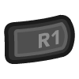

X Y
X Y X Y
X YA Nintendo Gamecube/Wii emulator for Android, Windows, Mac and Linux, written in C++.
The Dolphin core supports OpenGL, Vulkan, and Direct3D 11 rendering.
The Dolphin core is licensed under
A summary of the licenses behind RetroArch and its cores can be found here.
For running properly, the Dolphin core requires to have the Dolphin Sys folder
in the proper location.
After downloading the core within RetroArch, execute the following steps:
If your frontend version has Main Menu > Online Updater > Core System Files Downloader then that's the easiest solution, just download 'Dolphin.zip' from that menu and you're all done!
If your frontend version has Main Menu > Online Updater > Content Downloader:
Get a copy of the Dolphin Sys folder. This can be done by downloading the
current source code. We provide two methods: one using Git and one without.
git clone --depth=1 https://github.com/libretro/dolphin.git
After getting the code, enter in the folder containing it.
The Sys folder you need is located in Data/Sys.
This is the folder we will need to move/copy.
Find RetroArch's system folder path
Unless you customized your installation, the RetroArch configuration path is
the one listed in the
RGUI page.
If you didn't change any value, the system folder is:
RETROARCH_CONFIG_DIR/system.
If you changed the default directory configuration, you should check the
system_directory option in the RetroArch configuration file (usually
retroarch.cfg) to see which folder is used.
In the RETROARCH_SYSTEM_FOLDER, create the dolphin-emu directory and
move/copy the Sys folder within it.
Ultimately, the Sys folder should be placed at a location similar to:
RETROARCH_SYSTEM_FOLDER/dolphin-emu/Sys
There is also currently a bug with this core and the GL driver that can be worked around by going to settings > user interface > show advanced settings ON and then going to settings > core > allow cores to change the video driver OFF.
The Dolphin core will now work without issues.
The (optional) BIOS file goes in the directory retroarch/saves/User/GC/<USA or EUR or JAP>, with the file name IPL.bin for all regions. It is not necessary to provide a BIOS for most games, but certain titles (particularly those which make heavy use of the system fonts, like Star Fox Assault) can be unplayable without it.
Content that can be loaded by the Dolphin core have the following file extensions:
RetroArch database(s) that are associated with the Dolphin core:
Frontend-level settings or features that the Dolphin core respects.
| Feature | Supported |
|---|---|
| Restart | ✔ |
| Saves | ✔ |
| States | ✔ |
| Rewind | ✔ |
| Netplay | ✕ |
| Core Options | ✔ |
| RetroAchievements | ✕ |
| RetroArch Cheats | ✕ |
| Native Cheats | ✔ |
| Controls | ✔ |
| Remapping | ✔ |
| Multi-Mouse | ✕ |
| Rumble | ✕ |
| Sensors | ✕ |
| Camera | ✕ |
| Location | ✕ |
| Subsystem | ✕ |
| Softpatching | ✕ |
| Disk Control | ✕ |
| Username | ✕ |
| Language | ✔ |
| Crop Overscan | ✕ |
| LEDs | ✕ |
The Dolphin core's library name is 'Dolphin'
TODO/FIXME
When the 'Language' core option is set to automatic, the default Dolphin language setting will be pulled from RetroArch's Language setting.
Disabled by default.
TODO/FIXME
Dolphin's OpenGL renderer can be used by setting RetroArch's video driver to gl.
The common option for all operating systems is OpenGL, requiring hardware that supports OpenGL/Open GL ES 3.0 or higher. It is an older, pre-Vulkan API, slower than Vulkan but with better compatibility. If you encounter problems with other APIs, try this one.
Dolphin's Vulkan renderer can be used by setting RetroArch's video driver to vulkan.
This is the latest and fastest API currently. It is most recommended for demanding less of your CPU, thus being the fastest.
Dolphin's Direct3D 11 renderer can be used by setting RetroArch's video driver to d3d11.
In some cases Direct3D 11 may offer better performance than OpenGL, especially on integrated Intel graphics.
The Dolphin core has the following option(s) that can be tweaked from the core options menu. The default setting is bolded.
| RetroPad Inputs | GameCube Controller | Wiimote | Wiimote (sideways) | Wiimote + Nunchuk | Classic Controller | Classic Controller Pro |
|---|---|---|---|---|---|---|
|
B | B | 1 | B | B | B |
|
Y | 2 | B | Z | Y | Y |
|
- | - | 2 | - | - | |
|
Start | + | + | 1 | + | + |
|
D-Pad Up | D-Pad Up | D-Pad Up | D-Pad Up | D-Pad Up | D-Pad Up |
|
D-Pad Down | D-Pad Down | D-Pad Down | D-Pad Down | D-Pad Down | D-Pad Down |
|
D-Pad Left | D-Pad Left | D-Pad Left | D-Pad Left | D-Pad Left | D-Pad Left |
|
D-Pad Right | D-Pad Right | D-Pad Right | D-Pad Right | D-Pad Right | D-Pad Right |
|
A | A | 2 | A | A | A |
| X | 1 | A | C | X | X | |
|
- | ZL | L | |||
|  | Z | + | ZR | R | ||
|
L | Shake Nunchuk | L | ZL | ||
|
R | Shake | Shake | Shake Wiimote | R | ZR |
|
L-Analog | |||||
|
R-Analog | Home | Home | Home | Home | Home |
| X |
Analog X | Tilt X | Tilt X | Nunchuk Stick X | Left Stick X | Left Stick X |
| Y |
Analog Y | Tilt Y | Tilt Y | Nunchuk Stick Y | Left Stick Y | Left Stick Y |
| X |
C-Stick X | Tilt X | Right Stick X | Right Stick X | ||
| Y |
C-Stick Y | Tilt Y | Right Stick Y | Right Stick Y |